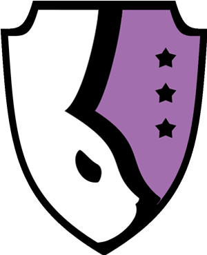
4 mois
5
C#
Programmeur seul
Ouvrez des boosters, agencez votre terrain, découvrez les illustrations de la communauté et partagez les vôtres dans Rubikards, un jeu de cartes à collectionner mêlant créativité et idle game. Rubikards est un jeu mobile basé sur les thématiques de notre école Rubika, dont le game design s’articule autour d’un gameplay incrémental et d’un fort aspect communautaire, plaçant la création et le partage de contenu au cœur de l’expérience.
Rubikards est un projet conçu pour simuler une production professionnelle, dans laquelle notre école jouait le rôle du client. Ce cadre nous a amenés à travailler avec des contraintes proches de celles d’un projet réel et ceux notamment concernant les contraintes visuels. Ce projet m’a permis de découvrir des problématiques avancées liées à la programmation réseau et à la gestion de données en ligne, tout en m’initiant à une production plus structurée. Projet réalisé dans le cadre de mes études à Rubika Valenciennes.
En tant que programmeur sur Rubikards, j’ai pris en charge la majorité des aspects techniques liés au fonctionnement du jeu et de son infrastructure. Mes principales contributions sont les suivantes : • Architecture des cartes : L’objectif était de concevoir un système modulaire permettant de définir les caractéristiques d’une carte telles que leurs effets (gérés par des id), leur type (carte active ou passive) ainsi que d’autres paramètres relatifs à la communauté. Cette implémentation fut d’autant plus complexe qu’il était nécessaire que les joueurs puissent créer leurs propres cartes directement en jeu. • Programmation réseau : Notre projet, de par son concept, a nécessité la mise en place d’un système de base de données en ligne. L’objectif était que les joueurs puissent créer et partager leurs cartes tout en votant pour leurs préférées. Cela a nécessité de gérer des comptes joueurs, des requêtes SQL, mais également le stockage d’images en ligne. L’ensemble de ces systèmes a été implémenté via un service tiers : Supabase, permettant de sauvegarder les cartes et les créations de la communauté. • Programmation asynchrone : La problématique du réseau a également soulevé celle des réponses latentes. En effet, un serveur en ligne ne peut pas répondre instantanément à une requête. Pour pallier à ce problème et éviter de bloquer tout le jeu lorsqu’une requête est effectuée, j’ai eu recours aux « async » et « await ». • Interfaces et Input System : Ce projet m’a permis de me familiariser avec les spécificités des inputs mobiles (click, hold, drag et swipe). J’ai également profité de cette occasion pour utiliser un concept qui m’était jusqu’alors peu familier : les interfaces. Celles-ci m’ont permis de mettre en place un système très modulaire qui, une fois en place, n’a nécessité que très peu de modifications, même après trois mois de production, ce qui fut une première pour moi.
L’un des principaux défis de Rubikards a été l’estimation du temps des différentes tâches. En effet, de nombreux concepts m’étaient complètement nouveaux et notre scope initial me paraissait irréalisable dans le temps imparti. Cependant, un calendrier clair et une production bien menée ont permis de libérer suffisamment de temps pour parvenir à implémenter ce que nous voulions initialement. Ce projet m’a permis d’apprendre de nombreux concepts clés et de les mettre en application dans un contexte concret.
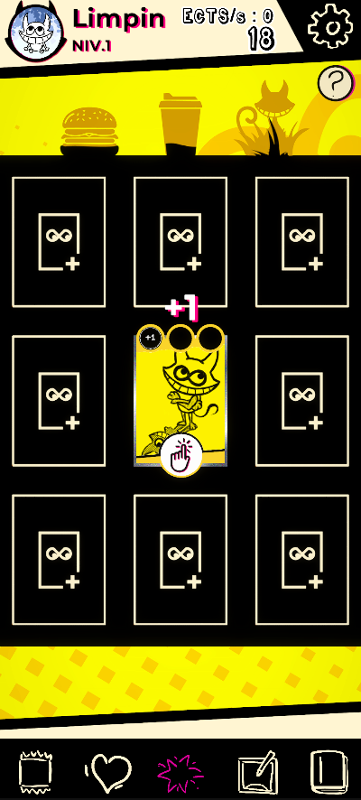
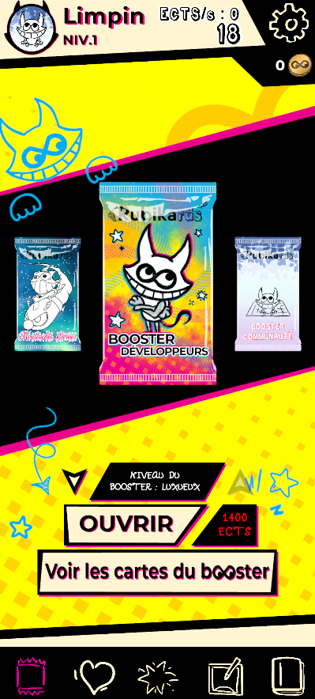
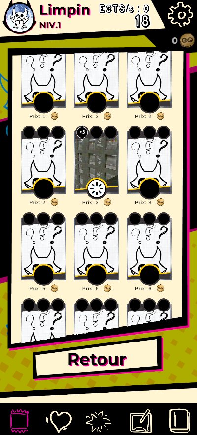
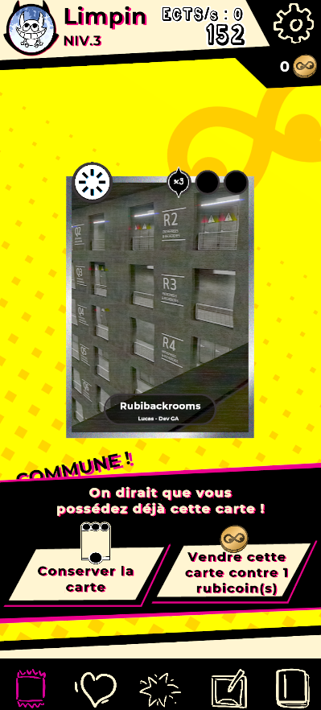
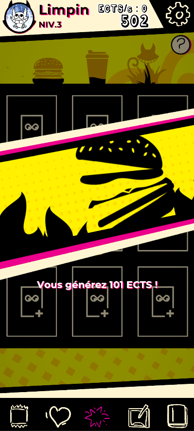
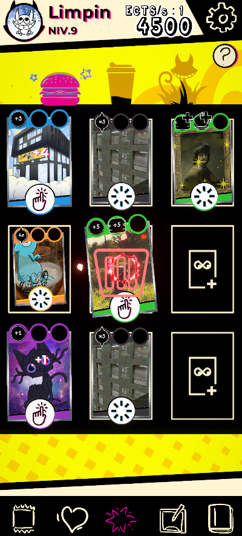
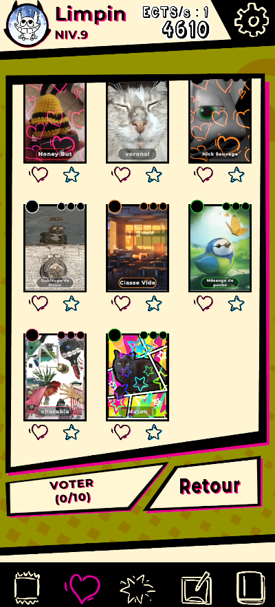
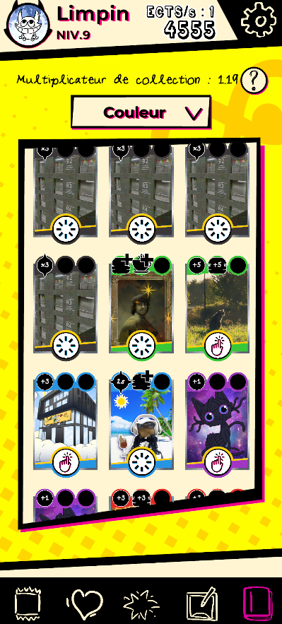
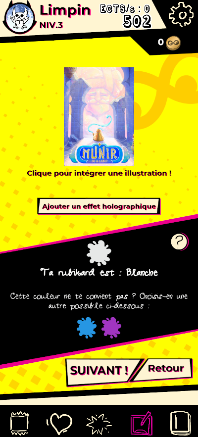
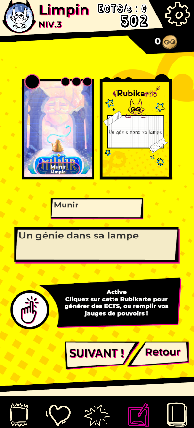
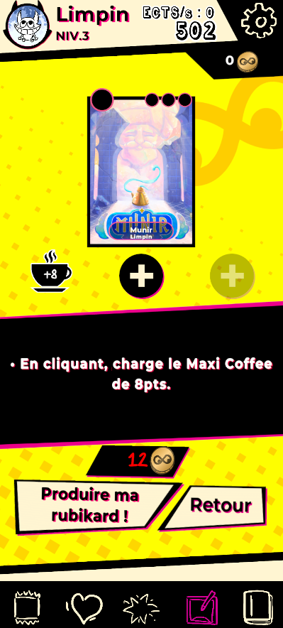
<
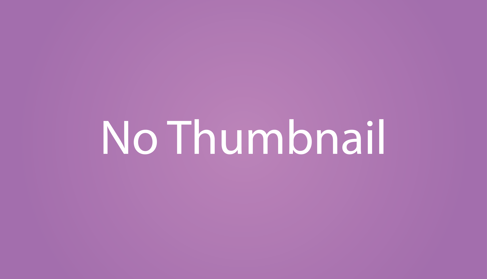
>